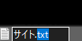

回答してください
ページ移動中
まず、サイトの中身を作るためにはhtmlを使用します 使い方はまずテキストファイルを作って
次に作ったファイルの拡張子を.txtから.htmlに変更するだけです。

←青いところをhtmlに変更する
変更したらメモ帳を開いてファイルをメモ帳までドラッグしてはなします
できたらあとはこのサイトを見てください
ここをクリック
p4" controls width="30%" height="auto" playsinline> お使いのブラウザはvideoタグをサポートしていません